WELCOME HOMEFaith feels different
Faith feels different
when we do life together.
Come for the worship. Stay for the people. Find a place that feels like home.
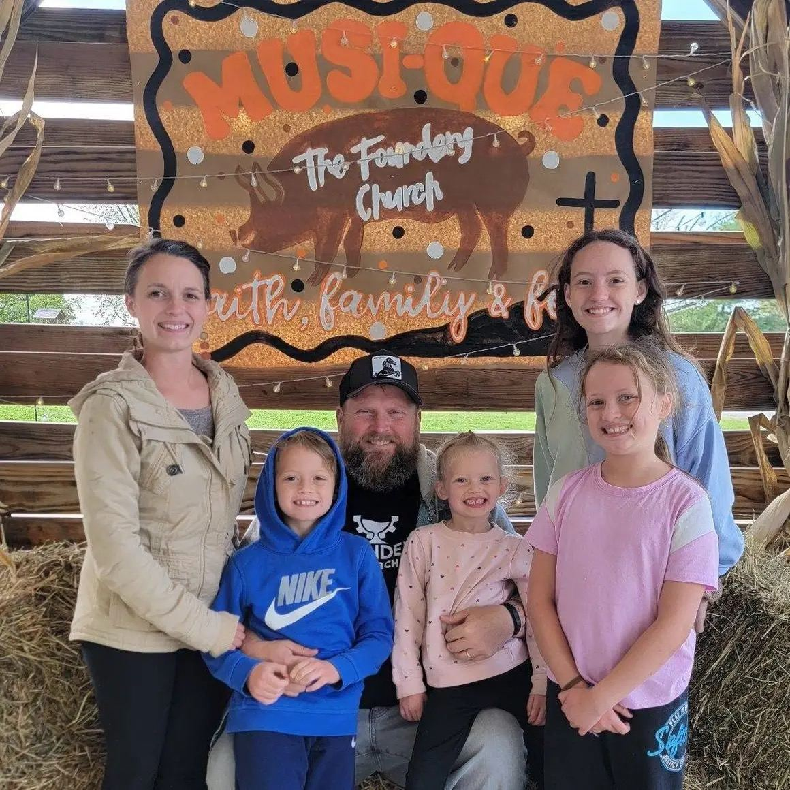
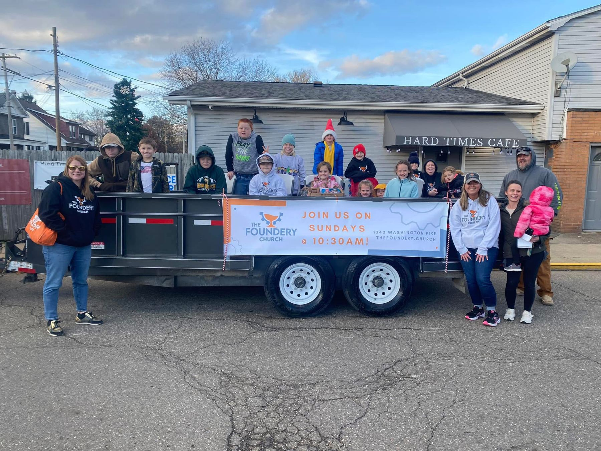
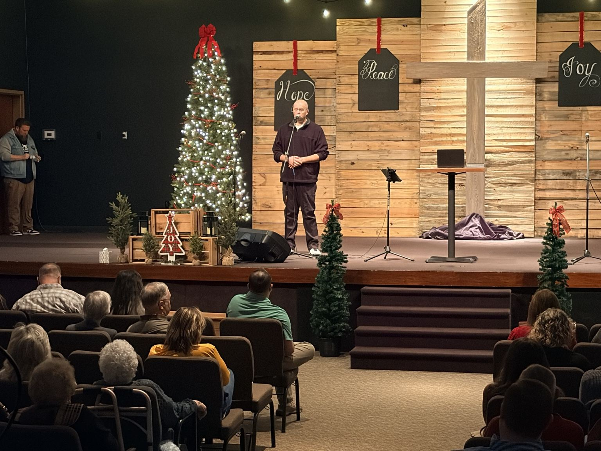
Come as you are. Find your people. Grow in faith together.
Come for the worship. Stay for the people. Find a place that feels like home.



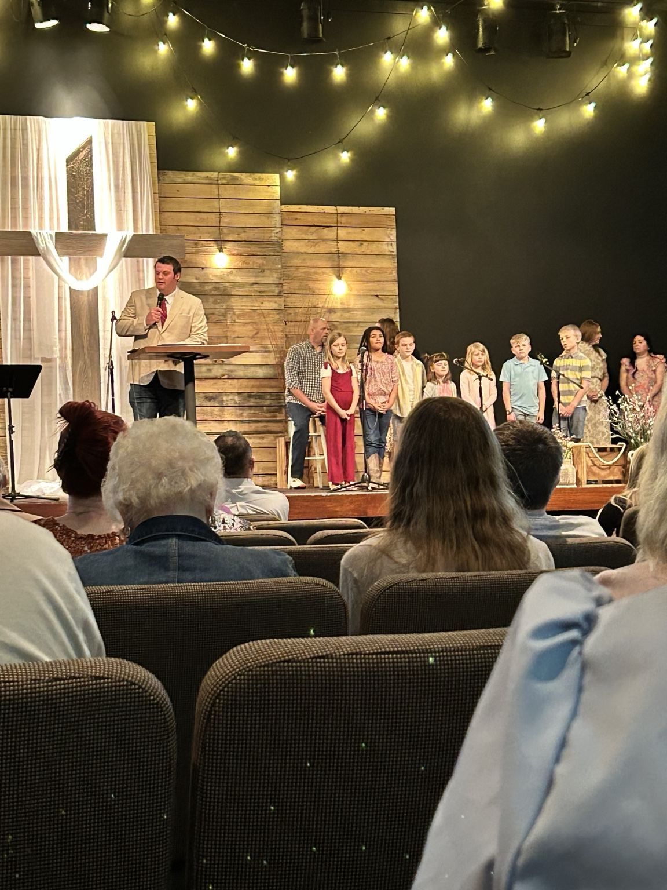
COME AS YOU ARETwo worship services. One church family. Come as you are.
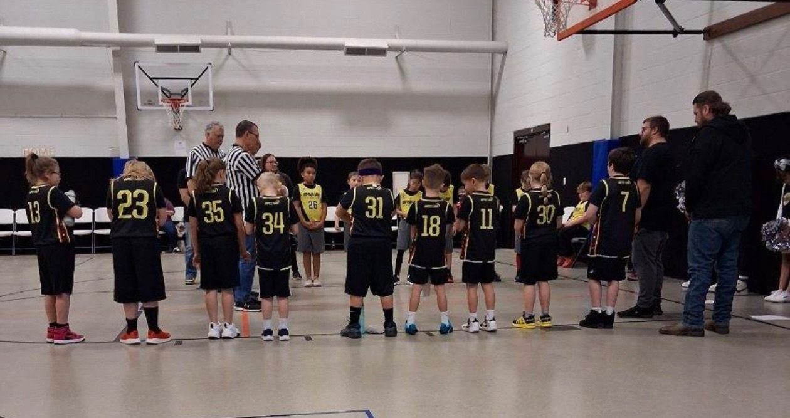
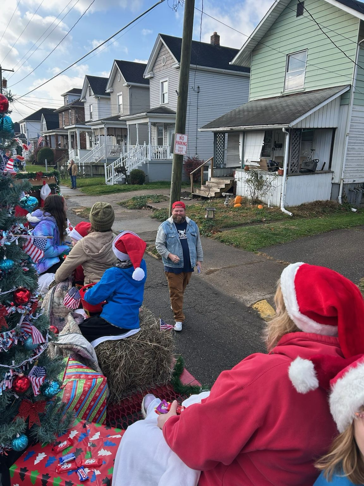
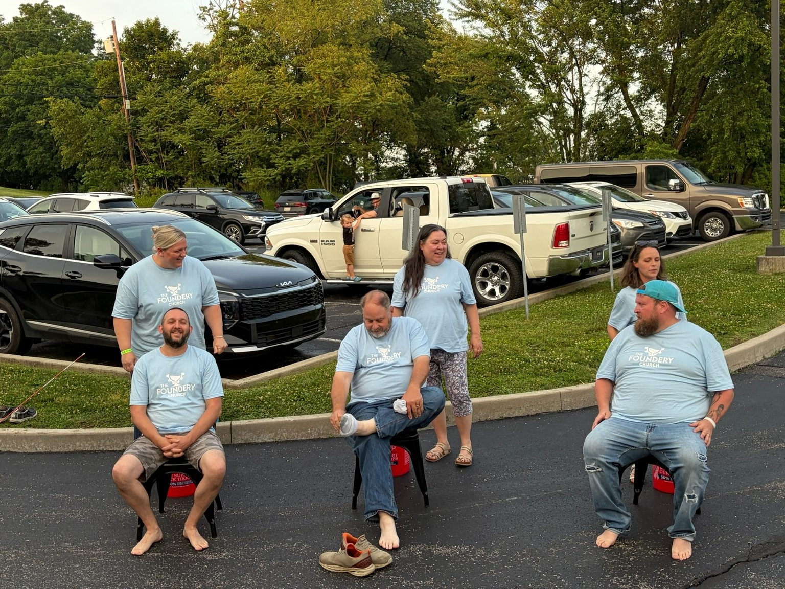
Pastor Bobby Westfall would love to meet you. You don't have to have it all figured out to walk through the doors.
See you this Sunday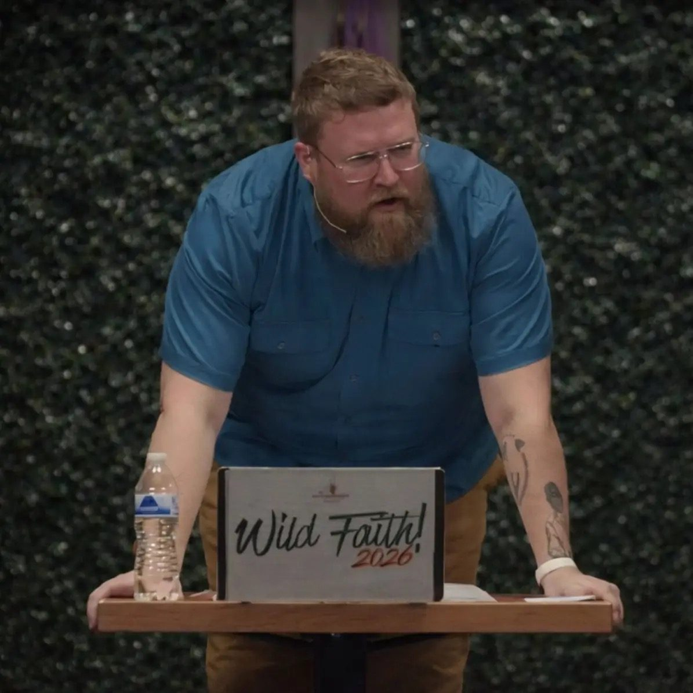
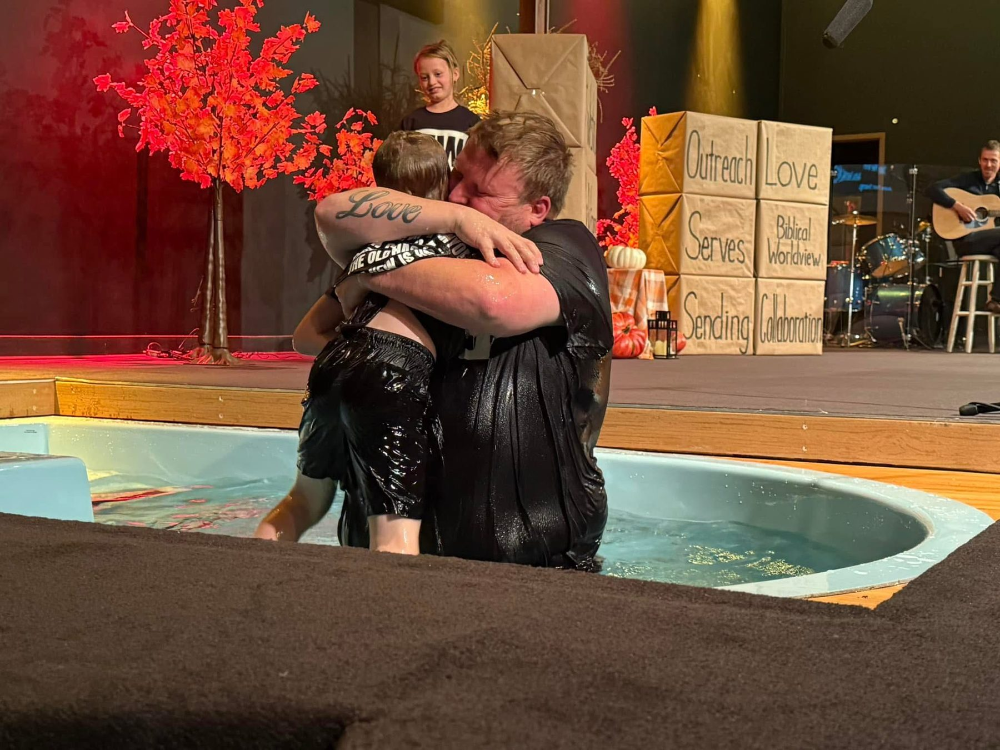
We believe every story matters. Including yours.
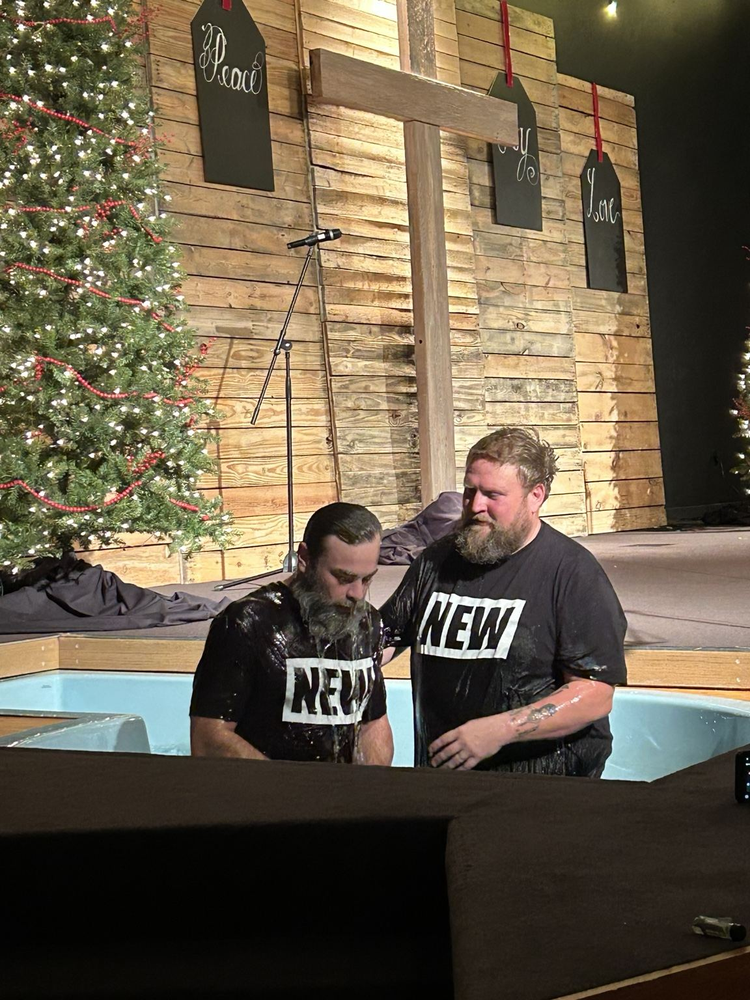
Every story has a beginning.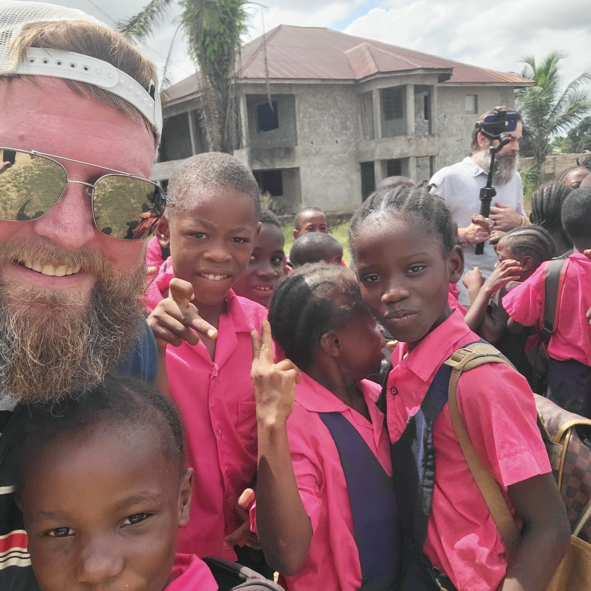
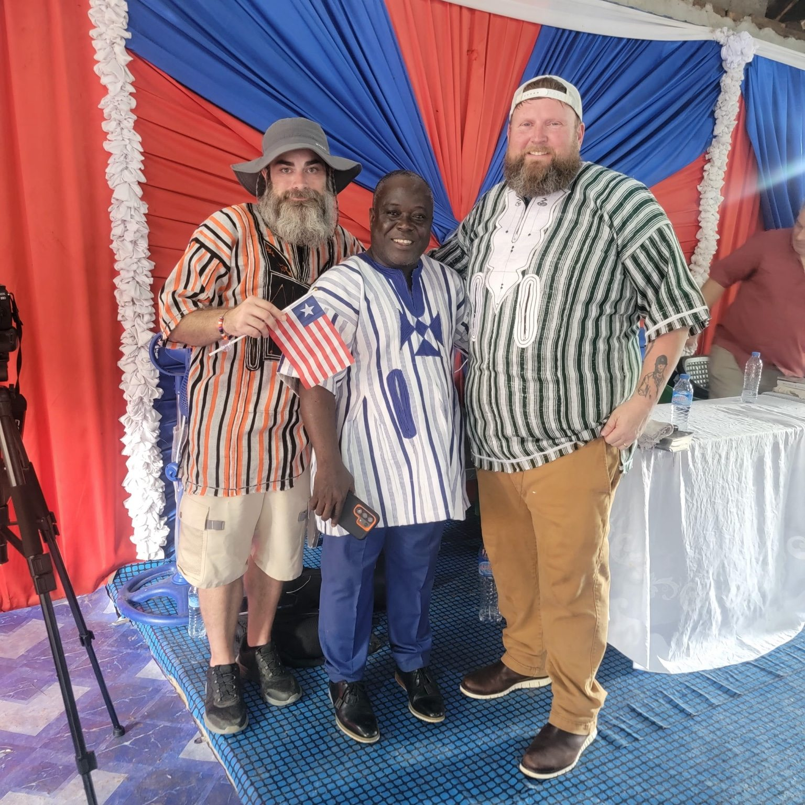
From Wellsburg to Liberia, we walk alongside local leaders and communities to cultivate hope.
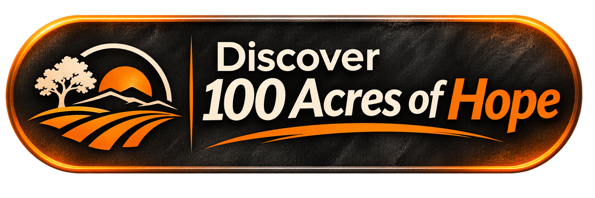
1340 Washington Pike
Wellsburg, West Virginia